Para crear un escenario es necesario como primer paso crear periodos presupuestarios desde el módulo de Control de Presupuesto (ver Manual aparte)
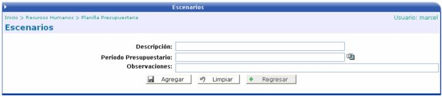
Luego de crear el encabezado del escenario, se procede a llenar cierta información necesaria para el cálculo del mismo.
Algo importante de mencionar es que se pueden tener varias tablas al mismo tiempo, con el único cuidado que no se pueden traslapar en las fechas si es una misma tabla, si son tablas diferentes no hay problema.
Por ejemplo:
Tabla 1, Fecha Inicial: 01/01/2007, Fecha Final: 30/06/2007
Tabla 1, Fecha Inicial: 01/01/2007, Fecha Final: 01/07/2007
Tabla 2, Fecha Inicial: 01/01/2007, Fecha Final: 31/12/2007
En la opción 1 y 2, se debe de seleccionar la tabla con la que se desea trabajar (en la opción 2 también de debe de seleccionar el escenario) y el rango de fechas en que va a utilizar la tabla. Adicionalmente si se quiere se puede ingresar un porcentaje de variación que incrementaría el monto que tiene la tabla, así como también la unidad de redondeo y el criterio de redondeo. La opción 3 es para importar un archivo de texto con el formato y campos necesarios para ingresar una tabla al sistema.
A continuación se muestran las diferentes opciones descritas anteriormente:


Formato del Archivo de Importación:
El archivo debe ser un archivo plano y debe de tener las siguientes columnas:
1. Código de la Tabla
2. Descripción de la tabla
3. Fecha de Inicio de la Tabla
4. Fecha Final de la Tabla
5. Código del Puesto Presupuestario
6. Código de la Categoría de Pago
7. Código del Componente Salarial
8. Monto
9. Fecha de Inicio del Componente
10. Fecha Final del Componente
Para separar las columnas se debe de utilizar una coma (,) y para el fin de línea se debe de presionar la tecla <Enter>
Pasos para la importación:
Selección de Archivo: seleccione el archivo que desea cargar presionando el botón “Browse”
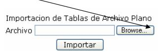
Importación: una vez seleccionado el archivo presione el botón de ”Importar”

Resumen de Importación: al importar el archivo se mostrará información relacionada con la importación.
Revisión: una vez importado el archivo puede revisar la importación, presionando el botón de Regresar
Luego de que se ha ingresado la(s) tabla(s) salarial(es), por cualquiera de las opciones anteriores, se puede consultar el detalle de las mismas, con solo hacer click sobre el registro:

Esta es la información que se muestra al hacer click sobre una tabla. Muestra las categorías/puesto que contiene la tabla salarial
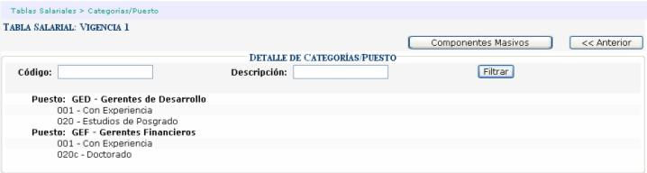
También al seleccionar una categoría se muestra el detalle de los componentes que la conforman. Si el usuario lo desea puede eliminar componentes, presionando el ícono que se encuentra a la par del componente:
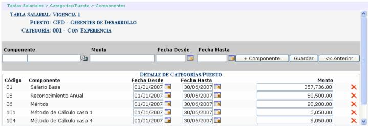

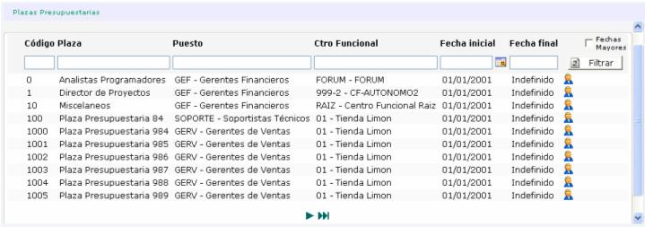
Al presionar el ícono  ,
se abrirá una ventana con la información del empleado que esta actualmente
ocupando esa plaza:
,
se abrirá una ventana con la información del empleado que esta actualmente
ocupando esa plaza:

También se pueden agregar o eliminar componentes masivos, presionando el botón
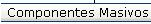
, donde se abrirá una pantalla con diferentes parámetros a indicar:

O también si se desea se pueden agregar de uno en uno presionando el puesto traído de la lista e ingresando los datos en la siguiente pantalla:
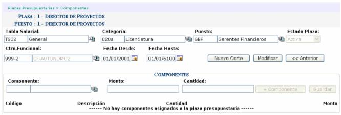
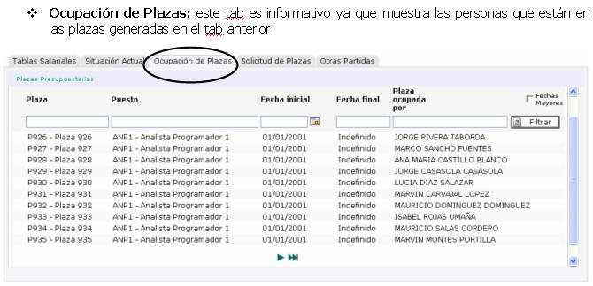
Si se quiere ver el detalle, se debe de hacer click sobre el registro deseado, para que se muestre la lista de componentes que tiene asociado:
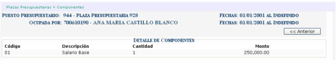


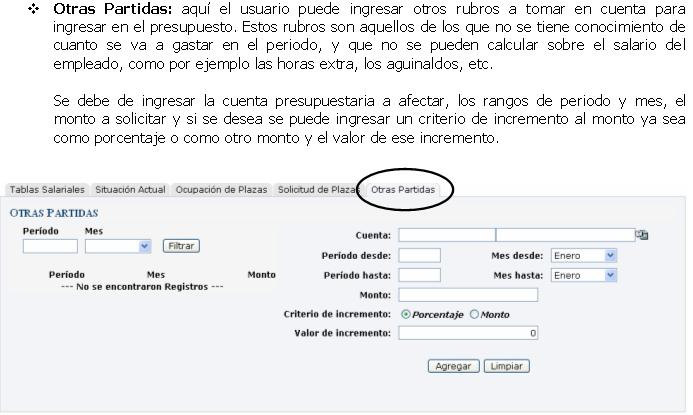
Una vez ingresada toda la información del escenario, se procede a calcular el mismo presionando el botón de
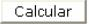
que se encuentra en el encabezado del escenario. El proceso que se realiza es la formulación por mes (los que estén dentro del rango) para cada una de las cuentas presupuestarias que están relacionadas. Para ello se muestra un reporte que muestra dichos datos:
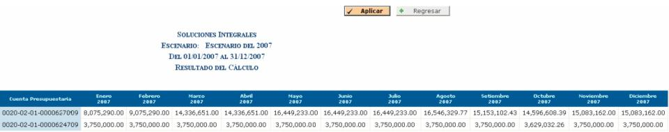
Luego de esto se debe de aplicar el mismo, para generar una versión de presupuesto para ser aprobada, al aprobar la versión se aprueba el escenario y el mismo queda vigente. Solo un escenario puede estar vigente por periodo presupuestario.